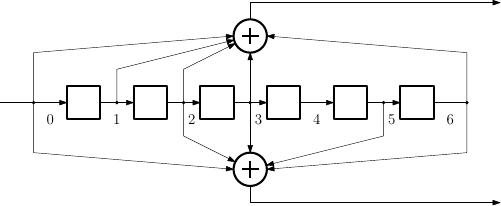

komm.ConvolutionalCode¶
- class ConvolutionalCode(feedforward_polynomials, feedback_polynomials=None)[source]¶
Binary convolutional code. It is characterized by a matrix of feedforward polynomials \(P(D)\), of shape \(k \times n\), and (optionally) by a vector of feedback polynomials \(q(D)\), of length \(k\). The element in row \(i\) and column \(j\) of \(P(D)\) is denoted by \(p_{i,j}(D)\), and the element in position \(i\) of \(q(D)\) is denoted by \(q_i(D)\); they are binary polynomials (
BinaryPolynomial) in \(D\). The parameters \(k\) and \(n\) are the number of input and output bits per block, respectively.The transfer function matrix (also known as transform-domain generator matrix) \(G(D)\) of the convolutional code, of shape \(k \times n\), is such that the element in row \(i\) and column \(j\) is given by
\[g_{i,j}(D) = \frac{p_{i,j}(D)}{q_{i}(D)},\]for \(i \in [0 : k)\) and \(j \in [0 : n)\).
Constraint lengths and related parameters
The constraint lengths of the code are defined by
\[\nu_i = \max \{ \deg p_{i,0}(D), \deg p_{i,1}(D), \ldots, \deg p_{i,n-1}(D), \deg q_i(D) \},\]for \(i \in [0 : k)\).
The overall constraint length of the code is defined by
\[\nu = \sum_{0 \leq i < k} \nu_i.\]The memory order of the code is defined by
\[\mu = \max_{0 \leq i < k} \nu_i.\]Space-state representation
A convolutional code may also be described via the space-state representation. Let \(\mathbf{u}_t = (u_t^{(0)}, u_t^{(1)}, \ldots, u_t^{(k-1)})\) be the input block, \(\mathbf{v}_t = (v_t^{(0)}, v_t^{(1)}, \ldots, v_t^{(n-1)})\) be the output block, and \(\mathbf{s}_t = (s_t^{(0)}, s_t^{(1)}, \ldots, s_t^{(\nu-1)})\) be the state, all defined at time instant \(t\). Then,
\[\begin{split}\mathbf{s}_{t+1} & = \mathbf{s}_t A + \mathbf{u}_t B, \\ \mathbf{v}_{t} & = \mathbf{s}_t C + \mathbf{u}_t D,\end{split}\]where \(A\) is the \(\nu \times \nu\) state matrix, \(B\) is the \(k \times \nu\) control matrix, \(C\) is the \(\nu \times n\) observation matrix, and \(D\) is the \(k \times n\) transition matrix.
Table of convolutional code
The table below lists optimal convolutional codes with parameters \((n,k) = (2,1)\) and \((n,k) = (3,1)\), for small values of the overall constraint length \(\nu\). For more details, see [LCJr04] (Sec. 12.3).
Parameters \((n, k, \nu)\)
Transfer function matrix \(G(D)\)
\((2, 1, 1)\)
[[0o1, 0o3]]\((2, 1, 2)\)
[[0o5, 0o7]]\((2, 1, 3)\)
[[0o13, 0o17]]\((2, 1, 4)\)
[[0o27, 0o31]]\((2, 1, 5)\)
[[0o53, 0o75]]\((2, 1, 6)\)
[[0o117, 0o155]]\((2, 1, 7)\)
[[0o247, 0o371]]\((2, 1, 8)\)
[[0o561, 0o753]]Parameters \((n, k, \nu)\)
Transfer function matrix \(G(D)\)
\((3, 1, 1)\)
[[0o1, 0o3, 0o3]]\((3, 1, 2)\)
[[0o5, 0o7, 0o7]]\((3, 1, 3)\)
[[0o13, 0o15, 0o17]]\((3, 1, 4)\)
[[0o25, 0o33, 0o37]]\((3, 1, 5)\)
[[0o47, 0o53, 0o75]]\((3, 1, 6)\)
[[0o117, 0o127, 0o155]]\((3, 1, 7)\)
[[0o255, 0o331, 0o367]]\((3, 1, 8)\)
[[0o575, 0o623, 0o727]]References: [JZ15], [LCJr04], [WBR01]
Properties
The constraint lengths \(\nu_i\) of the code, for \(i \in [0 : k)\).
The control matrix \(B\) of the state-space representation.
The vector of feedback polynomials \(q(D)\) of the code.
The matrix of feedforward polynomials \(P(D)\) of the code.
The finite-state machine of the code.
The memory order \(\mu\) of the code.
The number of input bits per block, \(k\).
The number of output bits per block, \(n\).
The observation matrix \(C\) of the state-space representation.
The overall constraint length \(\nu\) of the code.
The state matrix \(A\) of the state-space representation.
The transfer function matrix \(G(D)\) of the code.
The transition matrix \(D\) of the state-space representation.
Methods
__init__(feedforward_polynomials[, ...])Constructor for the class.
Documentation
- __init__(feedforward_polynomials, feedback_polynomials=None)[source]¶
Constructor for the class. It expects the following parameters:
feedforward_polynomials2D-array of (BinaryPolynomialorint)The matrix of feedforward polynomials \(P(D)\), which is a \(k \times n\) matrix whose entries are either binary polynomials (
BinaryPolynomial) or integers to be converted to the former.feedback_polynomials1D-array of (BinaryPolynomialorint), optionalThe vector of feedback polynomials \(q(D)\), which is a \(k\)-vector whose entries are either binary polynomials (
BinaryPolynomial) or integers to be converted to the former. The default value corresponds to no feedback, that is, \(q_i(D) = 1\) for all \(i \in [0 : k)\).
Examples
The convolutional code with encoder depicted in the figure below has parameters \((n, k, \nu) = (2, 1, 6)\); its transfer function matrix is given by
\[G(D) = \begin{bmatrix} D^6 + D^3 + D^2 + D + 1 & D^6 + D^5 + D^3 + D^2 + 1 \end{bmatrix},\]yielding
feedforward_polynomials = [[0b1001111, 0b1101101]] = [[0o117, 0o155]] = [[79, 109]].>>> code = komm.ConvolutionalCode(feedforward_polynomials=[[0o117, 0o155]]) >>> (code.num_output_bits, code.num_input_bits, code.overall_constraint_length) (2, 1, 6)
The convolutional code with encoder depicted in the figure below has parameters \((n, k, \nu) = (3, 2, 7)\); its transfer function matrix is given by
\[\begin{split}G(D) = \begin{bmatrix} D^4 + D^3 + 1 & D^4 + D^2 + D + 1 & 0 \\ 0 & D^3 + D & D^3 + D^2 + 1 \\ \end{bmatrix},\end{split}\]yielding
feedforward_polynomials = [[0b11001, 0b10111, 0b00000], [0b0000, 0b1010, 0b1101]] = [[0o31, 0o27, 0o00], [0o00, 0o12, 0o15]] = [[25, 23, 0], [0, 10, 13]].
>>> code = komm.ConvolutionalCode(feedforward_polynomials=[[0o31, 0o27, 0o00], [0o00, 0o12, 0o15]]) >>> (code.num_output_bits, code.num_input_bits, code.overall_constraint_length) (3, 2, 7)
The convolutional code with feedback encoder depicted in the figure below has parameters \((n, k, \nu) = (2, 1, 4)\); its transfer function matrix is given by
\[G(D) = \begin{bmatrix} 1 & \dfrac{D^4 + D^3 + 1}{D^4 + D^2 + D + 1} \end{bmatrix},\]yielding
feedforward_polynomials = [[0b10111, 0b11001]] = [[0o27, 0o31]] = [[23, 25]]andfeedback_polynomials = [0o27].
>>> code = komm.ConvolutionalCode(feedforward_polynomials=[[0o27, 0o31]], feedback_polynomials=[0o27]) >>> (code.num_output_bits, code.num_input_bits, code.overall_constraint_length) (2, 1, 4)
- property constraint_lengths¶
The constraint lengths \(\nu_i\) of the code, for \(i \in [0 : k)\). This is a 1D-array of
int. This property is read-only.
- property control_matrix¶
The control matrix \(B\) of the state-space representation. This is a \(k \times \nu\) array of integers in \(\{ 0, 1 \}\). This property is read-only.
- property feedback_polynomials¶
The vector of feedback polynomials \(q(D)\) of the code. This is a \(k\)-array of
BinaryPolynomial. This property is read-only.
- property feedforward_polynomials¶
The matrix of feedforward polynomials \(P(D)\) of the code. This is a \(k \times n\) array of
BinaryPolynomial. This property is read-only.
- property finite_state_machine¶
The finite-state machine of the code.
- property memory_order¶
The memory order \(\mu\) of the code. This property is read-only.
- property num_input_bits¶
The number of input bits per block, \(k\). This property is read-only.
- property num_output_bits¶
The number of output bits per block, \(n\). This property is read-only.
- property observation_matrix¶
The observation matrix \(C\) of the state-space representation. This is a \(\nu \times n\) array of integers in \(\{ 0, 1 \}\). This property is read-only.
- property overall_constraint_length¶
The overall constraint length \(\nu\) of the code. This property is read-only.
- property state_matrix¶
The state matrix \(A\) of the state-space representation. This is a \(\nu \times \nu\) array of integers in \(\{ 0, 1 \}\). This property is read-only.
- property transfer_function_matrix¶
The transfer function matrix \(G(D)\) of the code. This is a \(k \times n\) array of
BinaryPolynomialFraction. This property is read-only.
- property transition_matrix¶
The transition matrix \(D\) of the state-space representation. This is a \(k \times n\) array of integers in \(\{ 0, 1 \}\). This property is read-only.